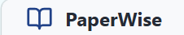
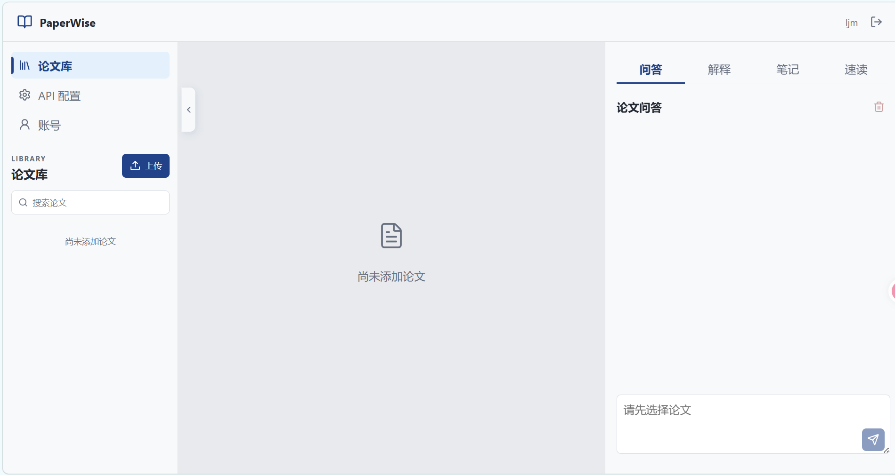
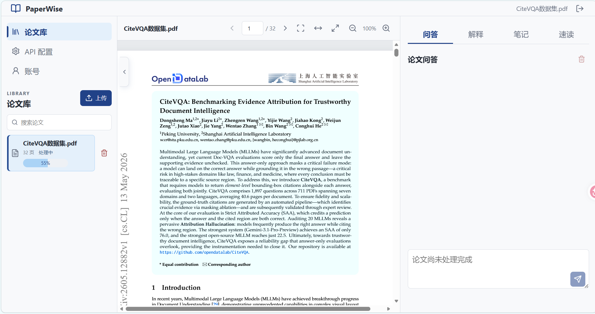
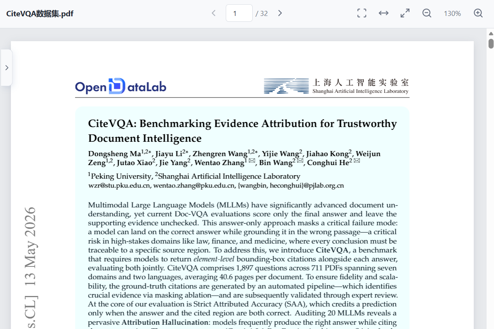
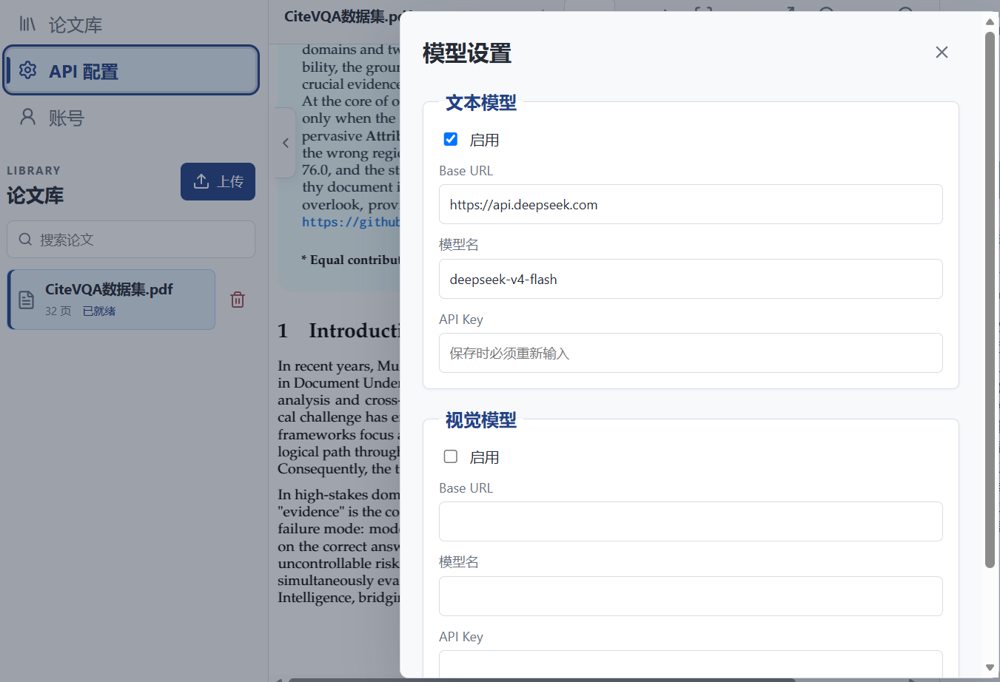
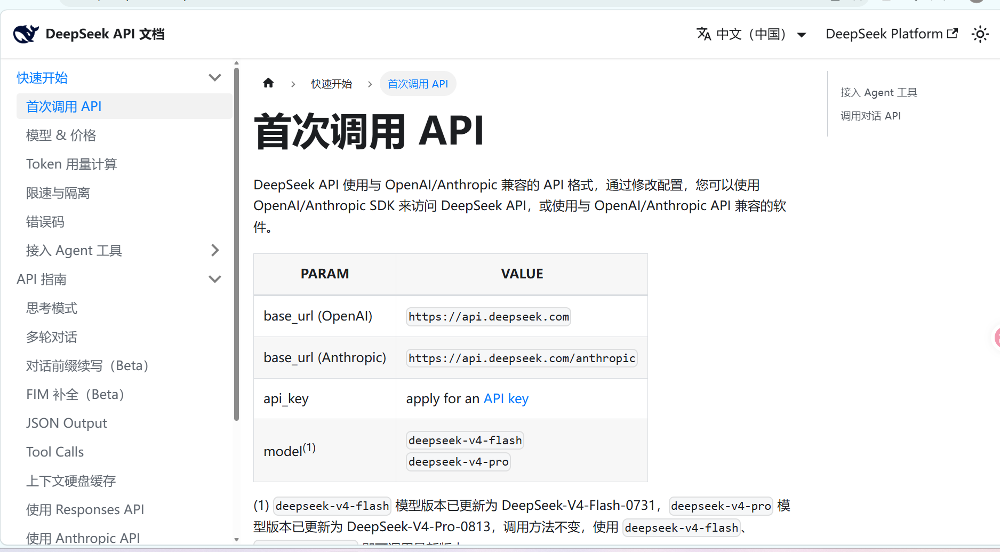
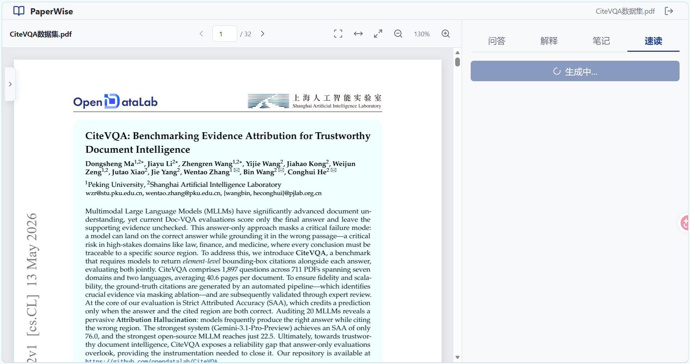
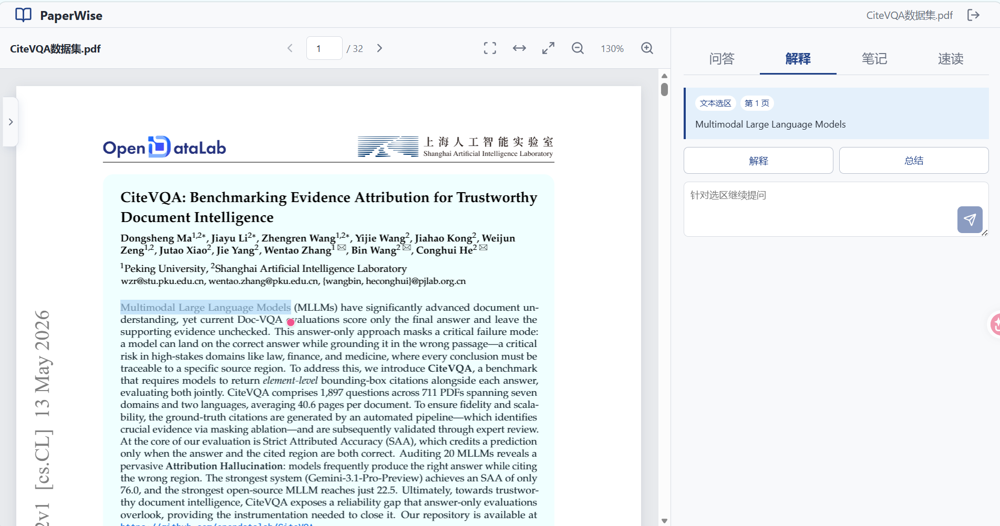
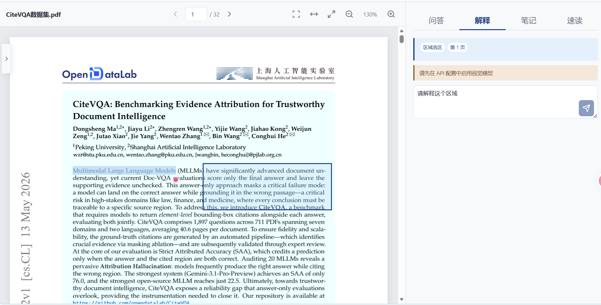

论文问答
每篇论文拥有独立会话。清空会话前会要求确认，引用页码始终来自当前论文。

返回阅读器PAPERWISE GUIDE
按照下面 6 个步骤即可完成一次完整阅读。截图可点击查看原图；界面中的论文名称和模型名称仅作为示例。
PDF 上传后会立即进入阅读器，解析任务在后台继续执行。


PDF 工具栏保持纯图标，通过页码、适配和缩放控制阅读视图。

以 DeepSeek 文本模型为例；模型地址、模型名和 API Key 均以服务商控制台为准。
https://api.deepseek.com。DeepSeek 在本教程中仅作为文本模型示例，用于问答、文本解释和速读。区域截图解释需要在“视觉模型”中配置支持图片输入的 OpenAI-compatible 服务。


速读会生成一份带来源引用的连续 Markdown 报告。
生成时间取决于论文长度和模型服务。生成过程中按钮会锁定，请等待完成，不需要重复点击。

文本选择适合段落和术语，区域框选适合图表、公式与混排内容。


问答用于围绕整篇论文检索，笔记用于沉淀阅读结果并返回原文。
每篇论文拥有独立会话。清空会话前会要求确认，引用页码始终来自当前论文。
普通笔记、文本选区和区域截图使用不同标签，切换论文时不会混入其他论文内容。